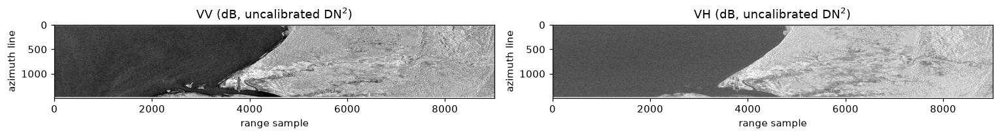
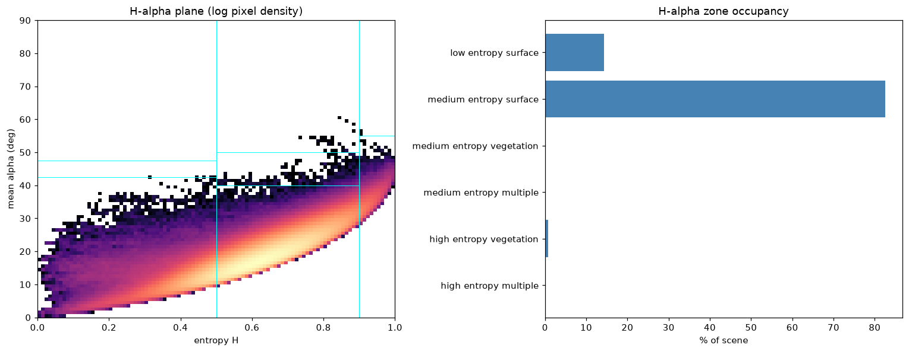
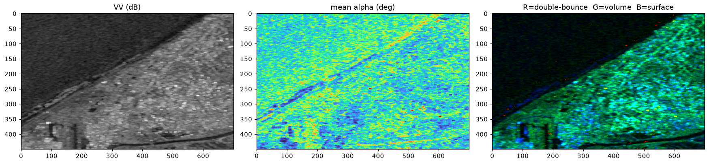
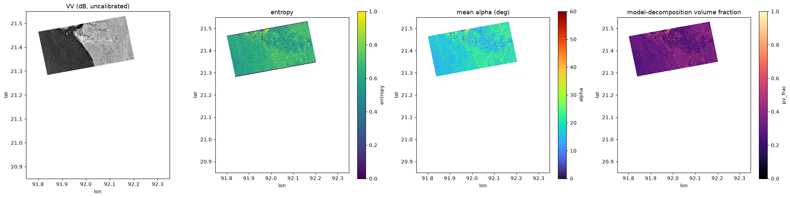

This notebook explains the dual-pol (VV and VH) polarimetric decomposition of Sentinel-1 SLC data into entropy, anisotropy and alpha angle, and computes it on a real scene of the Teknaf coast in Cox’s Bazar, Bangladesh.
Overview
Dual-pol polarimetric decomposition is a technique used to extract detailed information about the physical and structural properties of the Earth’s surface from Synthetic Aperture Radar (SAR) data, specifically when only two polarization channels- usually VV (vertical transmit, vertical receive) and VH (vertical transmit, horizontal receive) -are available.
Core concepts
Learning objectives
Form the 2x2 dual-pol covariance matrix C2 from Sentinel-1 VV and VH SLC channels and describe its intensity and correlation terms.
Derive entropy, anisotropy, and mean alpha from the C2 eigendecomposition, and relate alpha to surface, volume, and double-bounce scattering.
Explain how a dual-pol C2 result differs from a quad-pol decomposition of the full scattering matrix.
Use entropy, anisotropy, and alpha for land cover, vegetation structure, wetlands, crops, and disaster assessment.
Follow the Sentinel-1 path from TOPSAR split and complex calibration through the covariance matrix, multilook, speckle filtering, H/alpha decomposition, and terrain correction.
Compute H/alpha, Stokes parameters, and the m-delta, m-chi, and eigen-alpha splits on the Teknaf coast scene and compare their power shares.
Geocode entropy, mean alpha, VV, and the volume fraction with the burst orbit and a Copernicus DEM, and record that this example uses uncalibrated digital numbers and restituted orbits.
Contents
How it works
Real-data example: Cox’s Bazar – Teknaf coast, Bangladesh
Takeaways and limitations
How it works
In polarimetric Synthetic Aperture Radar (PolSAR), every pixel contains information about the scattering of radar signals, encoded as complex numbers (with amplitude and phase) for each available polarization channel. In typical dual-polarization (dual-pol) systems, only VV (vertical transmit and receive) and VH (vertical transmit, horizontal receive) backscatter measurements are available per pixel.
The first step in dual-pol decomposition is to construct, for each pixel, a \(2 \times 2\) complex covariance matrix \(\mathbf{C}_2\), defined as:
Here, \(S_{VV}\) and \(S_{VH}\) are the complex SAR signals for each polarization, \(^*\) denotes complex conjugation, and \(\langle \cdot \rangle\) indicates local multilooking (kernel-based averaging over neighboring pixels for noise reduction and improved statistical robustness).
This covariance matrix characterizes the intensity (diagonal elements) and mutual correlation (off-diagonal elements) between the polarimetric channels. To interpret physical scattering properties, we perform eigendecomposition of \(\mathbf{C}_2\):
Compute the two (real, non-negative) eigenvalues \(\lambda_1 \geq \lambda_2 \geq 0\) and corresponding eigenvectors.
Normalize the eigenvalues so that \(\lambda_1 + \lambda_2 = 1\) (i.e., divide by their sum if needed).
From these, physical parameters are computed:
Entropy (\(H\)):\[H = -\sum_{i=1}^2 \lambda_i \log_2 \lambda_i\] Entropy quantifies the randomness or diversity of scattering mechanisms; high \(H\) indicates multiple scattering types are present.
Anisotropy (\(A\)):\[A = \frac{\lambda_1 - \lambda_2}{\lambda_1 + \lambda_2}\] Anisotropy characterizes the contrast between the two dominant scattering processes.
Mean \(\alpha\) angle (\(\bar{\alpha}\)): For each eigenvector \(v_i = [v_{VV}^{(i)}, v_{VH}^{(i)}]^\top\), the \(\alpha\) angle is: \[\alpha_i = \arccos \left( |v_{VV}^{(i)}| \right)\] The mean alpha angle is then: \[\bar{\alpha} = \sum_{i=1}^2 \lambda_i \alpha_i\] The \(\alpha\) angle indicates the dominant scattering type: values near \(0^\circ\) correspond to surface scattering, intermediate values to volume scattering, and values near \(90^\circ\) to double-bounce (dihedral) scattering.
Using these parameters, we can generate derived images identifying different land cover types, water bodies, flood extent, or changes in vegetation structure, enabling many applications with just the dual-pol data (when full quad-pol is unavailable).
How does dual-pol decomposition differ from full PolSAR decomposition?
In full Polarimetric SAR (PolSAR), the radar system records all four polarization combinations (HH, HV, VH, VV), capturing the complete scattering matrix for each pixel. This allows construction of a \(3 \times 3\) covariance (C3) or coherency (T3) matrix, enabling detailed decomposition into physical, geometric, and statistical scattering mechanisms, such as surface, double-bounce, and volume scattering.
Dual-polarization (dual-pol) data, like that from Sentinel-1, includes only two channels, typically VV and VH. This limits analysis to a \(2 \times 2\) covariance (C2) matrix, from which only two eigenvalues and associated parameters (entropy, anisotropy, mean alpha angle) can be derived. As a result, the separation of scattering mechanisms is less detailed than with full quad-pol data.
In practice, dual-pol decomposition still reveals important information about the scene, such as distinguishing surface from volume or double-bounce scattering, but cannot fully resolve all interactions as precisely as quad-pol decomposition. However, dual-pol methods are computationally lighter, require less data volume, and are highly useful when quad-pol is unavailable.
Applications of Dual-Pol Decomposition
Dual-pol decomposition enables a range of important Earth observation applications, especially in situations where only VV and VH polarization channels are available (e.g., Sentinel-1). Some key applications include:
Land Cover Classification: By analyzing the polarimetric entropy, anisotropy, and alpha angle, different types of land surfaces can be distinguished, for example, separating forests, grasslands, croplands, and urban areas based on their characteristic scattering mechanisms.
Vegetation Structure Monitoring: Dual-pol decomposition parameters are sensitive to differences in vegetation types, densities, and structural characteristics. They help estimate parameters like vegetation biomass, assess forest structure, and detect changes such as deforestation or regrowth.
Wetland and Water Body Mapping: The scattering signatures extracted from dual-pol data are particularly useful for identifying flooded areas, wetlands, inland water bodies, and distinguishing them from surrounding land. This is valuable for flood monitoring, wetland inventories, and hydrological studies.
Crop Monitoring and Agricultural Applications: Temporal analysis of dual-pol parameters enables tracking of crop growth stages, health assessments, and mapping of agricultural extent.
Disaster Assessment: Detecting flood extent, burned areas, or changes from events like hurricanes and landslides can be improved through dual-pol scattering analysis.
These capabilities make dual-pol SAR decomposition a powerful tool in environmental monitoring, resource management, and disaster response, providing valuable insights even when only two polarization channels are available.
Workflow
The following workflow enables extraction of physical and structural properties of the scene using only the two dual-polarization channels (VV and VH) available in Sentinel-1 SLC data:
TOPSAR-Split: Split both VV and VH polarization channels from the SLC product, so that \(S_{VV}(x, y)\) and \(S_{VH}(x, y)\) are available for all pixels \((x, y)\).
Apply-Orbit-File: Apply precise orbit information to correct satellite position and timing.
Calibration with complex output: Perform radiometric calibration to obtain calibrated backscatter values while preserving both amplitude and phase (complex values) of \(S_{VV}\) and \(S_{VH}\) for each pixel.
TOPSAR-Deburst: Merge burst-wise SLC slices into a single, seamless scene for further processing.
Polarimetric-Matrices (C2 covariance matrix): For dual-pol (VV,VH), form the \(2 \times 2\) complex covariance (C2) matrix for each pixel: \[
\mathbf{C}_2 =
\begin{bmatrix}
\langle S_{VV} S_{VV}^* \rangle & \langle S_{VV} S_{VH}^* \rangle \\
\langle S_{VH} S_{VV}^* \rangle & \langle S_{VH} S_{VH}^* \rangle
\end{bmatrix}
\] where \(\langle \cdot \rangle\) denotes local multilook or averaging.
Multilook: Spatial averaging (multilooking) improves radiometric quality and reduces speckle, so all covariance/clutter statistics are estimated over a \(n \times m\) pixel window: \[
\langle S_{ij} S_{kl}^* \rangle = \frac{1}{N} \sum_{n=1}^N S_{ij}^{(n)} \left(S_{kl}^{(n)}\right)^*
\]
Polarimetric-Speckle-Filter (e.g. Refined Lee): Apply a polarimetric-adapted speckle filter to the C2 matrix to suppress noise while preserving polarimetric information.
Polarimetric-Decomposition → H-Alpha dual-pol: Perform eigenvalue/eigenvector decomposition of the (filtered) C2 matrix for each pixel, yielding the polarimetric entropy \(H\), anisotropy \(A\), and alpha angle \(\alpha\):
Let \(\lambda_1, \lambda_2\) be the normalized eigenvalues of \(C_2\) (\(\lambda_1 + \lambda_2 = 1\)), then:
Entropy:\[
H = -\sum_{i=1}^2 \lambda_i \log_2 \lambda_i
\]
Anisotropy:\[
A = \frac{\lambda_1 - \lambda_2}{\lambda_1 + \lambda_2}
\]
Alpha angle: Weighted mean of scattering angle, from the eigenvector orientations; in dual-pol: \[
\alpha = \sum_{i=1}^2 \lambda_i \alpha_i
\] where \(\alpha_i\) is derived from the eigenvector corresponding to \(\lambda_i\). These parameters help distinguish different scattering mechanisms (e.g. surface, volume, dihedral) via physical interpretation.
Terrain-Correction: Geocode the results into map coordinates accounting for local terrain/topography.
Feature extraction and classification: The derived features \(H\) (entropy), \(A\) (anisotropy), \(\alpha\) (alpha angle) at each pixel are used as inputs to a classification algorithm (e.g., Random Forest, SVM, or unsupervised clustering) for land cover or structure identification.
Note: Since Sentinel-1 only acquires VV and VH, the C2 (dual-pol) and its associated decompositions (H-Alpha dual-pol) are used, rather than full quad-pol decompositions (e.g., Freeman-Durden, Yamaguchi) which require HH and HV as well.
Real-data example: Cox’s Bazar – Teknaf coast, Bangladesh
The rest of this notebook runs the workflow above on a real Sentinel-1A IW SLC acquisition, 2024-01-13 (the same pass already used for the GRD tutorial, 07_03_01_01_sentinel1_grd.ipynb, over the same AOI), so the uncalibrated-GRD and coherent-SLC views of this coastline can be compared directly. The scene mixes open water, a river mouth, aquaculture ponds, cropland, and the built-up fringe of Cox’s Bazar town and its airport – enough scattering diversity to show surface, volume and (locally) double-bounce mechanisms side by side.
Two things are scoped down from the full ten-step workflow above, and said plainly rather than hidden:
No per-channel radiometric calibration (Step 3). ASF’s burst-extractor metadata XML does carry a calibrationVectorList, but applying it correctly means first isolating the one <product> block (of several swaths bundled in that file) that matches this burst – geolattice does not yet do that (the existing read_calibration_lut/calibrate pair expects a standalone SAFE calibration-*.xml, one swath per file). So VV and VH stay as raw digital numbers. H, A, mean α, the degree of polarization and the m-δ/m-χ/model-based power shares are all ratio quantities and are largely insensitive to a per-channel multiplicative constant; only absolute dB levels below would be off, and they are labelled as such.
No precise orbit file (Step 2). The annotation’s own restituted state vectors are good enough to place pixels on the map to within a DEM pixel or two for the overview map at the end – precision only matters this much for the interferometric phase work in the other notebooks of this series.
TOPSAR-Deburst (Step 4) is also not needed here: one burst (041_086041_IW1) already covers the whole AOI, so there is nothing to stitch.
Installation. This notebook needs installation option 5 (core, spatial analysis, spatial statistics, geostatistics and remote sensing): pip install "geolattice[remote-sensing]". See “Installation options” in the GeoLattice README.
Code
# Setup for the Cox's Bazar dual-pol example: libraries, the cache, the burst window,# the acquisition date and the two polarisations. The DEM is the tile already written# by the GRD tutorial, so this notebook does not download it again.import jsonimport warnings # control warning messageswarnings.filterwarnings("ignore") # hide library warningsfrom pathlib import Path # file pathsimport matplotlib.pyplot as plt # figuresimport numpy as np # arraysimport pandas as pd # tablesimport rioxarray # noqa: F401 (registers the .rio accessor on xarray)import xarray as xr # labelled rastersfrom geolattice import rsense as rs # GeoLattice remote sensingfrom geolattice.rsense import sar # SAR processing and polarimetryplt.rcParams.update({"figure.dpi": 110}) # figure resolutionCACHE = Path("../../../../Data/08_remote_sensing/08_03_radar/dualpol_coxsbazar") # complex bursts and the JSON that records each cropSLC = CACHE /"slc"# folder for the cropped burstSLC.mkdir(parents=True, exist_ok=True) # create it if neededAOI = (91.85, 21.30, 92.15, 21.55) # lon/lat, Cox's Bazar to Teknaf; the same box as the GRD tutorialDATE ="2024-01-13"# the S1A ascending pass already used for that GRD productBURST_ID ="041_086041_IW1"# relative orbit 41, sub-swath IW1; one burst covers the whole AOIPOLS = ("VV", "VH") # co-pol and cross-pol: IW transmits V and receives both V and HDEM_PATH = Path("../../../../Data/08_remote_sensing/08_03_radar/cop_dem_glo30/coxsbazar_dem.tif") # Copernicus GLO-30, cached by the GRD tutorial# version, AOI, date, burst and polarisationsprint(f"geolattice.rsense {rs.__version__} | AOI {AOI} | {DATE} | burst {BURST_ID} | {POLS}")
Sentinel-1’s burst-extractor products are already single-burst, single-polarisation files – searching ASF for fullBurstID=041_086041_IW1 with polarization="VV" and "VH" on this date is the TOPSAR-Split step. The two channels are downloaded, then only the AOI’s range-sample window of the one burst that covers it is read and cached as a complex array, so a second run of this notebook never needs to touch the network again.
Code
# Steps 1 and the read half of the workflow. ASF burst products are already one burst# and one polarisation, so searching for this burst id twice (VV, then VH) is the# TOPSAR-Split. Radiometric calibration (workflow step 3) is not applied: both channels# stay as complex digital numbers. A later run finds the .npy files and skips the download.def load_or_fetch(pol):# One complex array and a small JSON per polarisation. The annotation XML stays beside# them, so timing, orbit and pixel spacing can be read again without the GeoTIFF. npy, meta_path = SLC /f"{DATE}_{BURST_ID}_{pol}.npy", SLC /f"{DATE}_{BURST_ID}_{pol}.json"ifnot npy.exists(): # download only when the cropped burst is not cached# Needs an Earthdata Login in ~/.netrc (machine urs.earthdata.nasa.gov) and the ASF# application authorized once at https://search.asf.alaska.edu (Earthdata Login button).import asf_search as asffrom geolattice.rsense import access as rs_access # ASF download helper# a. The burst product for this polarisation. The search window runs one day past DATE# so that date is included; [0] is the single product the burst id returns. res = asf.search(platform=asf.PLATFORM.SENTINEL1, processingLevel="BURST", beamMode="IW", fullBurstID=BURST_ID, polarization=pol, start=DATE, end=str(pd.Timestamp(DATE) + pd.Timedelta(days=1)))[0] burst_index = res.properties["burst"]["burstIndex"] # index of the burst in the annotation raw = CACHE /"raw"# folder for the raw download raw.mkdir(exist_ok=True) # create it if needed# b. Download the measurement GeoTIFF and the annotation XML. rs_access.asf_download(asf.ASFSearchResults([res]), raw)# the image and its annotation XML tif, xml =next(raw.glob(f"{res.properties['fileID']}*.tif*")), next(raw.glob(f"{res.properties['fileID']}*.xml"))# c. The annotation holds timing, the orbit and the geolocation grid. swath is the last# three characters of the burst id ("IW1"). An ASF burst XML bundles every sub-swath,# so the polarisation has to be named as well. ann = sar.read_slc_annotation(xml, swath=BURST_ID[-3:], polarisation=pol)# d. The range-sample window that covers the AOI, plus 300 samples of margin each side. cols = sar.burst_window(ann, burst_index, AOI, margin=300)# e. That window as complex64. Samples outside the burst's valid range are stored as 0. z = sar.read_slc_burst(tif, ann, burst_index, cols=cols)# f. Store the complex burst as two int16 planes (real, imag). The XML and a small JSON# of the crop (burst index, columns kept, file id) stay beside it. The GeoTIFF is deleted. np.save(npy, np.stack([z.real, z.imag]).astype("int16")) xml.replace(SLC /f"{DATE}_{BURST_ID}_{pol}.xml") # keep the annotation XML in the cache# save the burst metadata as JSON meta_path.write_text(json.dumps({"burst_index": burst_index, "col0": cols[0], "col1": cols[1],"file": res.properties["fileID"], "polarisation": pol})) tif.unlink() # delete the large original TIFF# Rebuild the complex array from the two int16 planes. A stored 0 is a sample outside the# valid range, not a measured zero, so it becomes NaN and drops out of the covariance average. arr = np.load(npy)# rebuild the complex SLC from the stored real and imaginary parts z = (arr[0].astype("float32") +1j* arr[1].astype("float32")).astype("complex64") z[z ==0] = np.nan # 0 marks samples outside the burst's valid rangereturn z, json.loads(meta_path.read_text()) # the SLC and its metadata# Both channels. VH is kept only for its samples: timing, orbit and pixel spacing are the# same for both polarisations of one burst, so the VV annotation is the one used below.vv, meta = load_or_fetch("VV")vh, _ = load_or_fetch("VH") # the VH burst# VV annotation (geometry and timing)ann_vv = sar.read_slc_annotation(SLC /f"{DATE}_{BURST_ID}_VV.xml", swath=BURST_ID[-3:], polarisation="VV")BURST_INDEX, COL0 = meta["burst_index"], meta["col0"] # which burst, and the first kept range sample# shapes and the valid shareprint(f"VV {vv.shape}, VH {vh.shape}, {100* np.mean(np.isfinite(vv)):.1f}% valid | "f"{ann_vv['mission']}{ann_vv['pass'].lower()}, heading {ann_vv['heading']:.1f}deg, "f"mid-incidence {ann_vv['incidence_mid']:.1f}deg | "f"pixel spacing {ann_vv['range_pixel_spacing']:.2f} m (range) x {ann_vv['azimuth_pixel_spacing']:.2f} m (azimuth) | "f"wavelength {ann_vv['wavelength'] *100:.2f} cm")
VV (1495, 9019), VH (1495, 9019), 97.6% valid | S1A ascending, heading 347.7deg, mid-incidence 34.0deg | pixel spacing 2.33 m (range) x 14.00 m (azimuth) | wavelength 5.55 cm
The C2 covariance matrix and multilook
covariance_c2 box-averages |VV|^2, |VH|^2 and VV*VH^* together – the multilook of Step 6 and the C2 matrix of Step 5 in one call. The window is 3 lines x 18 samples: at this burst’s pixel spacing that is about 42 m x 42 m on the ground (close to square, since a single-look SLC pixel is already ~14 m x 2.3 m, azimuth x range), for 3x18 = 54 looks of speckle reduction – a conventional choice, not an edge-preserving filter (Step 7’s geolattice.rsense.sar.speckle.refined_lee is the edge-preserving option, usable the same way on each of c11, c22, c12_re, c12_im if more aggressive smoothing is needed).
Code
# Steps 5 and 6. covariance_c2 box-averages |VV|², |VH|² and VV·conj(VH) together, so the# multilook and the 2×2 covariance matrix are one call. The average keeps the single-look# grid (one value per SLC pixel); it does not thin the array.# 1. Three azimuth lines by 18 range samples. A single-look pixel here is about 14 m by 2.3 m,# so the window is about 42 m by 42 m on the ground: 54 looks, and close to square.# This is a plain box mean. The edge-preserving alternative is sar.speckle.refined_lee,# applied the same way to c11, c22, c12_re and c12_im.LOOKS = (3, 18) # (azimuth, range) box, ~42 m x 42 m on the ground, 54 looks# dual-pol covariance matrix C2 (c11, c22 and the cross term c12), averaged over LOOKSc2 = sar.covariance_c2(vv, vh, LOOKS)# c11 = <|VV|²>, c22 = <|VH|²>, and (c12_re, c12_im) = <VV·conj(VH)>. span is their total# power. The decompositions below split this same quantity into mechanisms.span = c2["c11"] + c2["c22"]# grid size and ground cell sizeprint(f"C2 grid: {c2['c11'].shape}, ground cell {LOOKS[0] * ann_vv['azimuth_pixel_spacing']:.0f} m x "f"{LOOKS[1] * ann_vv['range_pixel_spacing']:.0f} m ({LOOKS[0] * LOOKS[1]} looks)")# 2. The two intensities in dB. These are uncalibrated digital numbers (the burst calibration# LUT is not applied), so the colour scale is DN², not sigma-nought. VV, the co-pol# channel, is the brighter of the two over this coast.fig, axes = plt.subplots(1, 2, figsize=(14, 5))axes[0].imshow(10* np.log10(c2["c11"]), cmap="gray", vmin=30, vmax=48) # VV power in dBaxes[0].set_title("VV (dB, uncalibrated DN$^2$)") # titleaxes[1].imshow(10* np.log10(c2["c22"]), cmap="gray", vmin=20, vmax=40) # VH power in dBaxes[1].set_title("VH (dB, uncalibrated DN$^2$)") # titlefor ax in axes: # for both panels ax.set_xlabel("range sample"); ax.set_ylabel("azimuth line") # axis labelsplt.tight_layout() # arrange
C2 grid: (1495, 9019), ground cell 42 m x 42 m (54 looks)

H/alpha, Stokes parameters, and the three model-based decompositions
h_alpha_dual gives entropy, anisotropy and mean alpha from the C2 eigendecomposition, plus DpRVI. stokes_parameters treats {VV, VH} as a hybrid-pol-style Stokes vector (Raney 2007) to get the degree of polarization m directly. m_delta_decomposition and m_chi_decomposition split the span into surface/double-bounce/volume power using the co-cross relative phase and an ellipticity-style angle respectively; dual_pol_model_decomposition does the same split using the eigen-decomposition’s mean alpha instead, in the spirit of the dual-pol model-based decompositions of Mascolo et al. (2022). All three conserve power exactly: ps + pd + pv == span.
Code
# Step 8. Five readings of the same C2 matrix. **c2 passes its four elements# (c11, c22, c12_re, c12_im) as the arguments of each function below.# 1. h_alpha_dual is the Cloude (2007) dual-pol eigen-decomposition: entropy (0-1),# anisotropy, mean alpha in degrees, both eigenvalues, and DpRVI (Mandal et al. 2020).ha = sar.h_alpha_dual(**c2)# stokes_parameters treats {VV, VH} as a hybrid-pol Stokes vector (Raney 2007). s0 is the# span. degree_of_polarization is 0 for fully depolarized return and 1 for one pure# mechanism; on a 2×2 Hermitian matrix it equals the anisotropy.st = sar.stokes_parameters(**c2)# m-δ splits the span with the co/cross relative phase. Surface power grows as that phase# nears 0°, double-bounce as it nears 180°, and the depolarized remainder is volume.md = sar.m_delta_decomposition(**c2)# m-χ uses an ellipticity angle instead of the relative phase. Surface is largest near# χ = −45° and double-bounce near +45°; volume is again the depolarized part of the span.mc = sar.m_chi_decomposition(**c2)# The eigen model gives the depolarized part of the span to volume, then the polarized# remainder entirely to surface when mean alpha is under 45° and entirely to double-bounce# when it is not (the dual-pol model-based split of Mascolo et al. 2022).dm = sar.dual_pol_model_decomposition(**c2)# 2. Each decomposition is built so ps + pd + pv equals the span. The number printed is the# largest relative leftover, over real NaN-padded float32 data rather than the algebra.for name, out in (("m-delta", md), ("m-chi", mc), ("eigen model", dm)):# surface + double-bounce + volume power should add up to the total power (span) rel_err = np.nanmax(np.abs((out["ps"] + out["pd"] + out["pv"]) - span) / np.maximum(span, 1e-6))print(f"{name:12s} max relative power-conservation error: {rel_err:.2e}") # largest relative error# 3. Scene means. A power share is that mechanism's mean power divided by the mean span,# in percent. The three splits need not agree: they attribute the same two channels# to surface, double-bounce and volume by different rules.summary = pd.DataFrame({"entropy": [np.nanmean(ha["entropy"])], "anisotropy": [np.nanmean(ha["anisotropy"])],"mean alpha (deg)": [np.nanmean(ha["alpha"])], "DpRVI": [np.nanmean(ha["dprvi"])],"degree of polarization": [np.nanmean(st["degree_of_polarization"])],"m-delta Ps/Pd/Pv (%)": [tuple(round(100* np.nanmean(md[k]) / np.nanmean(span), 1) for k in ("ps", "pd", "pv"))],"model Ps/Pd/Pv (%)": [tuple(round(100* np.nanmean(dm[k]) / np.nanmean(span), 1) for k in ("ps", "pd", "pv"))],}, index=["scene mean"]).Tsummary # show the summary table
m-delta max relative power-conservation error: 1.59e-07
m-chi max relative power-conservation error: 1.59e-07
eigen model max relative power-conservation error: 8.20e-08
scene mean
entropy
0.60671
anisotropy
0.679304
mean alpha (deg)
18.38278
DpRVI
0.424277
degree of polarization
0.679304
m-delta Ps/Pd/Pv (%)
(70.4, 0.7, 28.9)
model Ps/Pd/Pv (%)
(71.1, 0.0, 28.9)
Mean alpha sits well under 45 degrees and all three decompositions put most of the scene’s power in pv (diffuse/volume-like) – expected for a crop that is mostly coastline, aquaculture ponds and cropland rather than dense city blocks. Degree of polarization, m, is below 1 but well above 0: a mix of fairly deterministic return (smooth water, bare mudflats) with noisier, more depolarizing patches (vegetation, rougher ground). The three decompositions do not agree exactly on how much double-bounce power pd there is (m-delta’s phase-based estimate is 0.7%, the eigen-alpha model’s is under 0.05%) – a reminder that these are three different, non-equivalent ways of attributing the same two-channel measurement to physical mechanisms, not three measurements of one ground truth.
The H-alpha plane
Plotting every pixel’s entropy against its mean alpha, with the Cloude-Pottier zone boundaries drawn in, is the usual way to see the mixture of scattering regimes at a glance.
Code
# Every pixel as a point in the H-α plane, then the share of the scene in each# Cloude-Pottier zone. Low alpha is surface scattering, alpha near 90° is double-bounce,# and high entropy means the two mechanisms are mixed.fig, axes = plt.subplots(1, 2, figsize=(14, 5.5))# 1. A 2-D histogram of entropy (0-1) against mean alpha (0-90°). LogNorm keeps the dense# low-alpha cloud from hiding the sparse high-alpha tail. The cyan rectangles are the# zone boundaries stored on H_ALPHA_ZONES (Z3, high-entropy surface, is omitted).h, a = np.ravel(ha["entropy"]), np.ravel(ha["alpha"])ok = np.isfinite(h) & np.isfinite(a) # pixels with valid entropy and alpha# 2-D histogram of the H-alpha planeaxes[0].hist2d(h[ok], a[ok], bins=(100, 90), range=[[0, 1], [0, 90]], cmap="magma", norm=plt.matplotlib.colors.LogNorm())for (h0, h1), (a0, a1) in sar.polsar.H_ALPHA_ZONES.values(): # each zone of the H-alpha plane axes[0].plot([h0, h1, h1, h0, h0], [a0, a0, a1, a1, a0], color="cyan", lw=0.6) # draw its outline# labels and titleaxes[0].set(xlabel="entropy H", ylabel="mean alpha (deg)", title="H-alpha plane (log pixel density)")# 2. h_alpha_classify returns a zone code 1-9 per pixel, or 0 where the pixel sits just# outside every zone (the boundaries do not tile the whole plane). The bar labels drop# the "Z9" prefix. Pixels with no entropy are left out, and so is that code-0 remainder.zones = sar.h_alpha_classify(xr.DataArray(ha["entropy"]), xr.DataArray(ha["alpha"])).values# zone number -> zone namezone_names = {v: k.split(" ", 1)[1] for k, (_, _) in sar.polsar.H_ALPHA_ZONES.items()for v in [int(k[1])]}pix = zones[np.isfinite(ha["entropy"])] # zone of every valid pixelcounts = pd.Series(pix).value_counts(normalize=True).sort_index() *100# share of pixels in each zone (%)counts = counts[counts.index >0] # drop the <3% of pixels that fall just outside every zone boundary# horizontal bar chartaxes[1].barh([zone_names.get(i, str(i)) for i in counts.index], counts.values, color="steelblue")axes[1].set(xlabel="% of scene", title="H-alpha zone occupancy") # labels and titleplt.tight_layout() # arrange

A closer look: double-bounce near Cox’s Bazar airport
Zooming into the airport perimeter (built structures, hard standing, perimeter fencing) shows why alpha and the model-based pd term are worth having even with only two channels: the bright, speckled texture in VV lines up with small but real patches of alpha > 45 degrees and a red (double-bounce) tint in the surface/volume/double-bounce composite below, right where the built structures are – while the surrounding cropland and the diagonal road/embankment running through the scene stay green (volume) and blue (surface).
Code
# A finer C2 over the airport. Less averaging keeps the built structures from being# mixed into the cropland around them.# 1. Half the range looks of the scene-wide window: 3 lines by 9 samples, about 42 m by# 21 m. Entropy, alpha and the eigen-model powers are recomputed on that grid.c2_fine = sar.covariance_c2(vv, vh, (3, 9))ha_fine = sar.h_alpha_dual(**c2_fine) # H-alpha decomposition at the finer looksdm_fine = sar.dual_pol_model_decomposition(**c2_fine) # model-based decomposition at the finer looks# 2. Rows and columns in the single-look array, around the airport perimeter# (buildings, hard standing, fencing).r0, r1, c0, c1 =700, 1150, 3600, 4300# window-relative rows/cols around the airportdef stretch(x, lo=2, hi=98): # 2-98 % stretch to [0, 1]# Map one band onto 0-1 between its 2nd and 98th percentiles, so a single bright# building does not wash the rest of the composite out to white. a, b = np.nanpercentile(x, [lo, hi])return np.nan_to_num(np.clip((x - a) / (b - a), 0, 1)) # clipped and NaN-free# 3. Square-root power, then the percentile stretch. Red is double-bounce (pd), green is# volume (pv) and blue is surface (ps).rgb = np.dstack([stretch(np.sqrt(dm_fine["pd"][r0:r1, c0:c1])), stretch(np.sqrt(dm_fine["pv"][r0:r1, c0:c1])), stretch(np.sqrt(dm_fine["ps"][r0:r1, c0:c1]))])# 4. VV intensity, mean alpha, and the three-colour composite of this crop.fig, axes = plt.subplots(1, 3, figsize=(16, 6))axes[0].imshow(10* np.log10(c2_fine["c11"][r0:r1, c0:c1]), cmap="gray") # VV in dB, croppedaxes[0].set_title("VV (dB)") # titleaxes[1].imshow(ha_fine["alpha"][r0:r1, c0:c1], cmap="turbo", vmin=0, vmax=60) # mean alpha, croppedaxes[1].set_title("mean alpha (deg)") # titleaxes[2].imshow(rgb) # RGB composite of the decomposition powersaxes[2].set_title("R=double-bounce G=volume B=surface") # titleplt.tight_layout() # arrange# 5. Share of this crop with alpha above 45° (double-bounce in the eigen model), set# against the same share over the whole scene.frac_db = np.nanmean(ha_fine["alpha"][r0:r1, c0:c1] >45) *100# share of double-bounce pixelsprint(f"double-bounce-dominated (alpha > 45 deg) pixels in this crop: {frac_db:.2f}%, "f"vs {np.nanmean(ha['alpha'] >45) *100:.3f}% over the whole scene")
double-bounce-dominated (alpha > 45 deg) pixels in this crop: 0.17%, vs 0.005% over the whole scene

Terrain correction
Finally, geocode entropy, mean alpha, VV and the model-decomposition volume fraction onto the Copernicus GLO-30 DEM’s map grid (the same DEM tile already cached by the GRD tutorial), using the burst’s own (non-precise) orbit state vectors and geo2rdr/terrain_correct – the same range-Doppler geocoding the InSAR notebooks use, just for one date instead of a stack.
Code
# Step 9. Geocode the radar-grid layers onto the Copernicus DEM. The orbit is the# annotation's own restituted state vectors (no POEORB file); that is enough to place# pixels to within a DEM cell or two on this overview map.# 1. The DEM tile cached by the GRD tutorial. terrain_correct uses these heights to put# each map cell into radar geometry, which removes foreshortening and layover.dem = rioxarray.open_rasterio(DEM_PATH).squeeze(drop=True)# 2. Zero-Doppler time of every azimuth line, and the slant range of the first kept# sample. slant_range_time is the two-way travel time of sample 0 of the full burst;# c/2 turns that into a range, and COL0 · range spacing shifts it to the AOI crop.# The C2 grid was only box-averaged, so it still has one value per single-look pixel# and lines up with these times and this near range.lpb = ann_vv["lines_per_burst"]t0 = ann_vv["bursts"][BURST_INDEX]["azimuth_time"] # azimuth time of the first line of the burst# azimuth time of every lineaz_time = t0 + (np.arange(lpb) * ann_vv["azimuth_time_interval"] *1e9).astype("timedelta64[ns]")# slant range of the first columnnear_range = ann_vv["slant_range_time"] * sar.SPEED_OF_LIGHT /2+ COL0 * ann_vv["range_pixel_spacing"]# 3. Four layers, sampled at every DEM cell by range-Doppler (geo2rdr inside# terrain_correct). vv_db and the volume fraction are derived here; entropy and alpha# come from the scene-wide decomposition. pv / span is the model's volume share.geo = sar.terrain_correct( {"vv_db": (10* np.log10(c2["c11"])).astype("float32"),"entropy": ha["entropy"].astype("float32"),"alpha": ha["alpha"].astype("float32"),"pv_frac": (dm["pv"] / span).astype("float32")}, az_time, near_range, ann_vv["range_pixel_spacing"], ann_vv["orbit"], dem,)# 4. The same four layers in map coordinates. VV is still uncalibrated DN². Equal aspect# keeps degrees of longitude and latitude from stretching the coast.fig, axes = plt.subplots(1, 4, figsize=(22, 5.5))geo["vv_db"].plot(ax=axes[0], cmap="gray", vmin=30, vmax=48, add_colorbar=False) # geocoded VVaxes[0].set_title("VV (dB, uncalibrated)") # titlegeo["entropy"].plot(ax=axes[1], cmap="viridis", vmin=0, vmax=1) # geocoded entropyaxes[1].set_title("entropy") # titlegeo["alpha"].plot(ax=axes[2], cmap="turbo", vmin=0, vmax=60) # geocoded mean alphaaxes[2].set_title("mean alpha (deg)") # titlegeo["pv_frac"].plot(ax=axes[3], cmap="magma", vmin=0, vmax=1) # geocoded volume fractionaxes[3].set_title("model-decomposition volume fraction") # titlefor ax in axes: # for every panel ax.set_aspect("equal"); ax.set_xlabel("lon"); ax.set_ylabel("lat") # equal aspect and axis labelsplt.tight_layout() # arrange

Takeaways and limitations
With only VV and VH, geolattice.rsense.sar.polsar recovers entropy, anisotropy, mean alpha, degree of polarization and three different surface/double-bounce/volume power splits from a single real Sentinel-1 acquisition – no HH/HV needed.
Over this coastal/agricultural crop, scattering is overwhelmingly low-alpha and volume/surface dominated (median alpha well under 45 degrees, double-bounce power a fraction of a percent scene-wide); the exception is the built-up fringe around Cox’s Bazar airport, where alpha and the model-decomposition’s pd term both pick out the same patches the VV backscatter highlights as bright and textured – a real double-bounce signal, localised exactly where urban/dihedral structures actually are.
What would make this more rigorous: per-channel radiometric calibration of the burst (needs a calibration-XML reader that isolates the right <product> block in ASF’s combined burst-extractor metadata – not yet in geolattice); a precise POEORB orbit for the terrain correction (not needed for the phase-free intensity work here, but cheap to add the same way the InSAR notebooks do); and, if HH/HV ever becomes available over the same scene, a true quad-pol decomposition (Freeman-Durden, Yamaguchi, Cloude-Pottier H/A/alpha on T3) for a direct comparison against the dual-pol approximations used here.
References
Cloude, S. R. (2007). The dual polarization entropy/alpha decomposition: A PALSAR case study. Proc. 3rd Intl Workshop POLinSAR.
Mandal, D., Kumar, V., Ratha, D., Dey, S., Bhattacharya, A., Lopez-Sanchez, J. M., McNairn, H., & Rao, Y. S. (2020). Dual polarimetric radar vegetation index for crop growth monitoring using Sentinel-1 SAR data. Remote Sensing of Environment, 247, 111954.
Raney, R. K. (2007). Hybrid-polarity SAR architecture. IEEE TGRS, 45(11), 3397-3404.
Charbonneau, F. J., Brisco, B., Raney, R. K., McNairn, H., Liu, C., Vachon, P. W., Shang, J., DeAbreu, R., Champagne, C., Merzouki, A., & Geldsetzer, T. (2010). Compact polarimetry overview for hybrid dual-polarized SAR data. Canadian Journal of Remote Sensing, 36(sup2), S298-S315.
Mascolo, L., Cloude, S. R., & Lopez-Sanchez, J. M. (2022). Model-based decomposition of dual-pol SAR data: Application to Sentinel-1. IEEE TGRS, 60, 1-13.